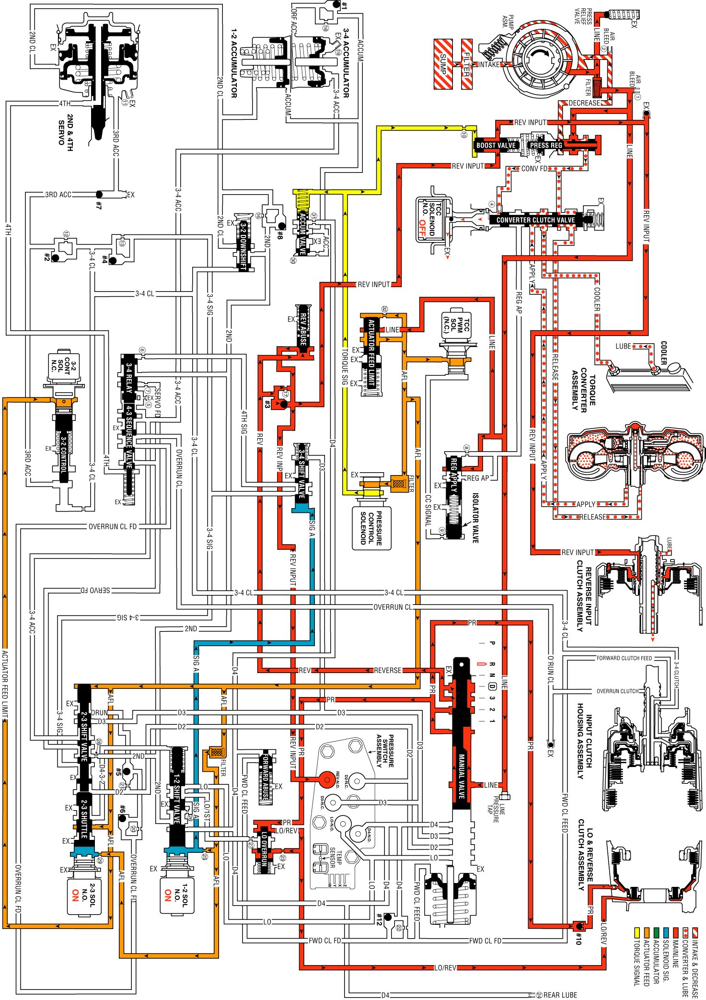

Reverse
Reverse
When the gear selector lever is moved to the Reverse (R) position (from the Park position), the following changes occur to the transmissions hydraulic and electrical systems:
Manual Valve
The manual valve moves to the Reverse position and line pressure enters the reverse fluid circuit. As in Park, line pressure also fills the PR (Park/Reverse) fluid circuit. All other fluid circuits are blocked by the manual valve.
Lo and Reverse Clutch
As in Park, PR fluid pressure acts on the outer area of the lo and reverse clutch piston to apply the lo and reverse clutch. Also, Lo/reverse fluid from the lo overrun valve acts on the inner area of the piston to increase the holding capacity of the clutch (see Note below).
Reverse Input Checkball (#3)
Reverse fluid pressure seats the #3 checkball, flows through orifice #17 and fills the reverse input fluid circuit. This orifice helps control the reverse input clutch apply rate when engine speed is at idle.
Reverse Abuse Valve
Reverse fluid pressure acts on the end of the valve opposite of spring force. At engine speeds above idle, reverse fluid pressure, which is fed by line pressure, increases and moves the valve against spring force (as shown). Reverse fluid can then fill the reverse input fluid circuit through the reverse abuse valve. This bypasses the control of orifice #17 and provides a faster clutch apply.
Boost Valve
Reverse input fluid pressure moves the boost valve against the pressure regulator valve spring. The spring acts on the pressure regulator valve to increase the operating range of line pressure in Reverse. Reverse input fluid also flows through the valve and to the reverse input clutch piston. Remember that torque signal fluid pressure continually acts on the boost valve to control line pressure in response to vehicle operating conditions.
Reverse Input Clutch Piston
Reverse input fluid pressure moves the piston to apply the reverse input clutch plates and obtain Reverse.
Reverse Input Air Bleed Checkball
This ball and capsule is located in the reverse input fluid circuit in the oil pump to provide an air escape when the fluid pressure increases. It also allows air into the circuit to displace the fluid when the clutch releases.
Transmission Fluid Pressure (TFP) Manual Valve Position Switch Assembly
Reverse input fluid pressure closes the normally open reverse switch in the TFP manual valve position switch This signals the PCM that the manual valve is in the Reverse (R) position.
Shift Solenoid Valves (1-2 and 2-3)
Both shift solenoid valves are energized as in the Park range. Signal A and signal B fluids are blocked from exhausting through the shift solenoid valves to maintain fluid pressure in these circuits at the end of the shift valves.
Shift Valves (1-2, 2-3 and 3-4)
Signal A fluid pressure holds the 1-2 shift valve in the downshifted position and the 3-4 shift valve in the upshifted (First and Fourth gear) position. Signal B fluid pressure from the 2-3 shift solenoid valve holds the 2-3 shift valve train in the downshifted position.
Pressure Control (PC) Solenoid Valve
The PC solenoid valve continues to regulate AFL fluid into torque signal fluid pressure. The PCM varies the current at the solenoid to regulate torque signal fluid pressure in response to throttle position and other PCM input signals. Torque signal fluid pressure is used to control line pressure at the boost and pressure regulator valves.
Note: The explanation in each gear range is, for the most part, limited.
Reverse
Reverse:
